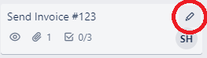

Move a Card Between Lists
Move cards to another list to stay organized.
- Use the Move command in the menu
- Click and drag the card to another list
To use the Move command
- Click the Card Settings button 
- Select Move
-
In the Move Card menu, select the new location of the
card with the drop down menus
Option Result Board Move the card to an entirely new board List Choose which list the card will appear under Position Choose the position of where the card will move to in the desired list - Click Move to finish
Dragging Cards
Alternatively, you can drag cards into new positions and lists
- Click and hold on a Card
- Drag the Card into another list or reorder its position in the same list